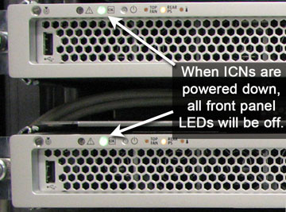

Proprietary to General Electric
Direction 5500113, Rev# 3
Discovery MR450 1.5T Service Methods
Module Version 3.0, Version Date 8/19/08
Proprietary to General Electric |
The sections below document helpful troubleshooting information for the following areas:
ICN On/Off Procedure (see Section 1)
ICN Connections (see Section 2)
ICN Software (see Section 3)
Power Failure (see Section 4)
IP Address Changes and VRE ICN Reconfiguration (see Section 5)
Assuming that all the Ethernet connections on the ICNs and GOC are correctly wired, the ICNs switch ON automatically when the HP GOC is switched ON.
| NOTE: | The ICNs do not turn ON until the system reaches the login prompt. |
Assuming that all the Ethernet connections on the ICNs and GOC are correctly wired, the ICNs switch OFF automatically when the HP computer is switched OFF in a orderly fashion via the software.
| NOTE: | Turning OFF the HP computer by just switching OFF power to the HP computer or GOC will not shut down the ICNs. The software running on the HP computer must be brought down orderly in order to effect the ICNs. |
| NOTE: | There is a steady green light on the front of the ICNs that indicates power ON when the light is shinning, and power OFF if the light is blinking. |
Illustration 1: Front of ICNs - Power On Light

If the HP GOC is locked up or dead, and you want to power off the ICNs, you can bring the ICNs down manually as follows:
| NOTE: | This is not the recommended solution. Please perform this step only if no other option is available. |
A MOMENTARY press of the power button on the ICNs will bring the ICN OS down cleanly and shut off power to the ICN. There is a delay of 30 seconds after pushing the power button before the shutdown begins. Wait for 3 minutes to see if the ICNs shut off after closing all of its files.
If after 3 minutes the ICN has not shut down, hold the power button down on the ICNs until it powers down. This overrides the ICN OS and forces a shut down.
When you bring up a working GOC, the ICNs should then turn back on.
Please go to ICN Power On/Off Procedure for more information.
Each ICN must have three connections to the Ethernet switch. If viewed from the top, two connections are on the right hand side and one on the left. The left connection is to the diagnostics port. Through this port the Firmware gets loaded into the ICN.
Illustration 2: Rear View of ICN

When loading software, after the FE selects the number of ICNs, the system detects the number of ICNs it sees and throws an error if the number of ICNs detected DO NOT match the numbber of ICNs selected. The FE must physically check the number of ICNs present in the PGR cabinet to ensure the number matches the number the system detects.
If the system sees more ICNs than what is selected by the FE, we need to switch off the CAM Chassis, load the OS, and switch it “ON”. The number of ICNs will then match and the FE can continue with the software load.
If the system sees less ICNs than what is selected by the FE, check the power to the ICNs by looking at all of the ICNs’ IPMI cables (leftmost Ethernet connection when facing the back of the ICN). Make sure it is properly seated on both ends. Try swapping Ethernet cables or try another port on the Ethernet switch before checking for a defective ICN.
After the OS loads onto the ICNs, the system displays the number of ICNs loaded. For example, in a 2 ICN system, the system will mention that 2 ICNs are loaded.
| NOTE: | After the ICN OS load, a connection error reported from the Infiniband Board is normal. Software will prompt FE to acknowledge. |
Even though the OS on the ICNs is loaded successfully, the green LED on the ICN will blink until the TPS reset is complete.
During boot up, if the CAM Chassis has boot problems (hardware or software), you will get a host communication time out error. It will not specify CAM issues.
The first thing to do is to try and ping the APS, AGP, SCP ["ping APS", "ping AGP", "ping SCP"], and the term server. If successful, do the mgd_term to watch boot errors when the CAM chassis is recycled.
When the ICN/s are not recognized and the green LED is "OFF”, do NOT pull out the ICN, take out the cables, or tamper with the hardware.
Instead, note the MAC address of the ICNs that does NOT have the LEDs ON, and switch them OFF. Refer to the ICN On/Off Procedure.
Another good source of ICN replacement information is found in the ICN Replacements procedure.
In the event of a power outage, go through the normal power up procedure from the GOC. If one of the ICNs does not power on, follow the following steps:
Try to reload the ICN OS using the normal procedure from the Service Desktop.
If there are discrepancies in the number of ICNs configured and the numbers detected, follow Section 1.
It is important during new installations and upgrades to ensure that your IP addresses are up-to-date (both Host IP and CAM IP). If any changes have been made to an IP address, you must Reconfigure the ICN.
Problems that can occur:
During application startup, an ICN may not successfully initiate and TPS Reset failures will occur if the ICN has not been reconfigured since the last IP address change.
Changing the host's IP address or the CAM's IP address without performing the ICN Reconfiguration procedure leaves the VRE configuration files with information pertaining to the old IP addresses.